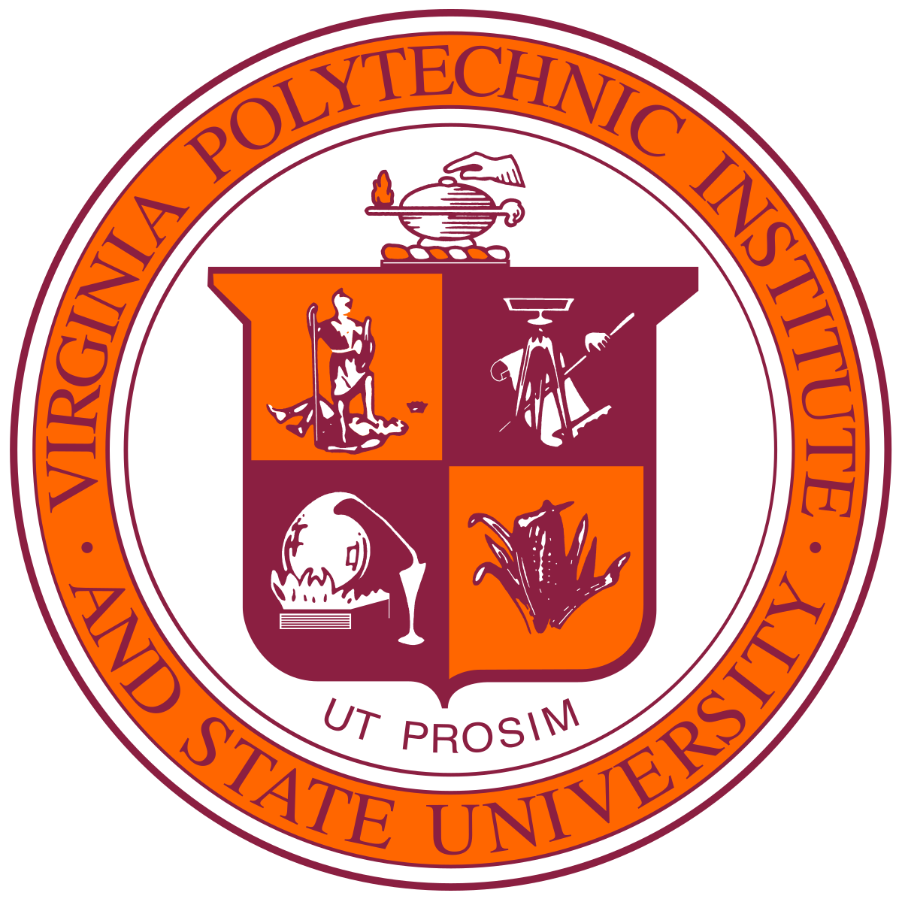
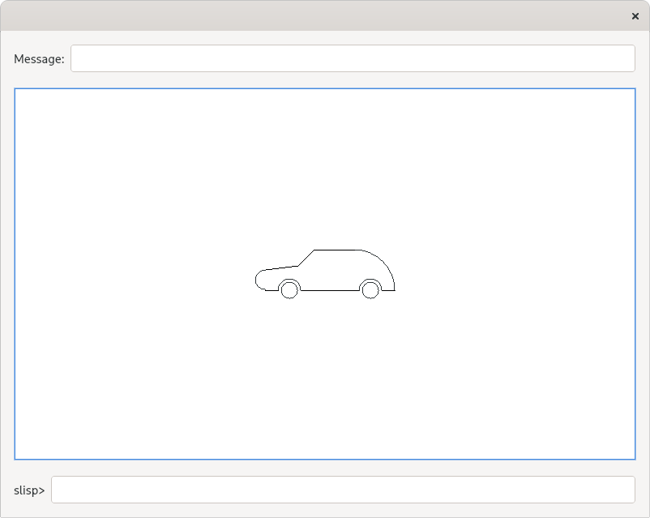
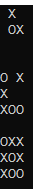
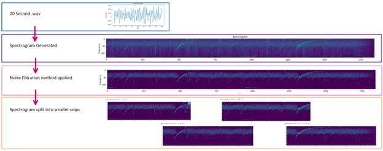
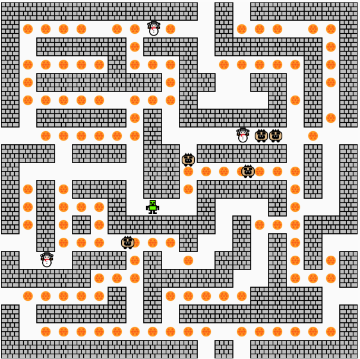

I am a computer engineer experienced in Embedded system, Controls, Robotics, and Autonomy. More than anything else, I love challenging myself. I take pride in going a bit further everyday towards achieving my vision. Time after time, I have achieved personal goals that might otherwise seem impossible with creative planning and relentless execution.
Background
I majored in Computer Engineer at the Virginia Polytechnic Institute and State University. Since then, I have worked in effective teams to relentlessly tackle technical problems, increase business value, and improve customer experience. I continue to rapidly grow with a humble, confident, and open-minded attitude.
Education

Virginia Polytechnic Institute and State University
B.S Computer Engineer
Aug. 2019 - May. 2023 (In progress)
Core courses:
Data Structure & Algorithms, Applied software design, Embedded system, Principles of Computer
Architecture, Video Game Design, Senior Design, Calculus of Multi Variable, Differential Equation
My Top Skills
Work Experience
Electrical Engineer (Summer Intern)
● Find the problem with the broken circuit board and repair it
● Find alternative electronic components which can use on an broken board and use new components to
redesign the board through Cadence
● Participation in semiconductor restoration projects
Undergraduate Research Assistant
● Find and generate the data within the senior research drive
● Train a model for bat ear tracking using DeepLabCut
● Develop the control unit of servo motors in a Batbot using Arduino and Python
● Use TCL Scripting language to script the numerical predictions of the deformations of the pinna based
on a given actuator configuration and actuator activation
● Use Hypermesh to predict the deformation of the pinna
Project
Slisp Language Interpreter
● Designed a computer software that is capable of drawing pictures and execute Slisp instructions on Qt5
framework
● Built a GUI to input instructions, display error messages, draw graphs, and display execution results
● Developed an interpreter module that executes Slisp expressions and sends results to user interface in
C++
● Performed unit testing with 97% coding coverage and fixed bugs to improve system reliability in Linux
environment
github: https://github.com/dchiu0525/Slisp-language-Interpreter.git

Tic Tac Toe (AI)
● Develop a Tic Tac Toe game using C++.

● It mainly consists of developing and implementing a computer
program that can play Tic Tac Toe with another player.
● Use the DFS -> Minimax algorithm and this makes this game automatable
github: https://github.com/dchiu0525/Tic-Tac-Toe-AI-.git
SSAI NASA Machine Learning
● Use embedding AI to detect patterns in very low frequency (VLF) electromagnetic waves in satellite
system
● Seek an embedded solution that would allow for microprocessors on orbiting instruments to take in
real-time streaming data and indicate the appearance of VLF patterns as they are observed
● Use machine learning solution that utilizes computer vision, deep learning and signal processing to
improve the VLF signal detection over traditional method
● Use jupyter notebook to generate the input .wav file through python

Pac Man with chasing Npc (AI)
● Use javescripte to development a simple Pac Man game
● Compile the game on P5
github: https://github.com/dchiu0525/Pacman-vs-Enemy-AI-.git

Elf Ranger
Single player action game similar to Mario
● Developed a 2D action game in P5 envrionment using JavaScript
● Developed and constructed game architecture (Programmed basic architecture)
● Spearheaded a 2-person team that developed this 2D game and implemented add-ones to improve user experience
● Implemented 2D physics engine using box collision detection and response
● Designed and arranged the levels
● Implemented AI framework and basic behavior
github: https://github.com/dchiu0525/Elf-Ranger.git